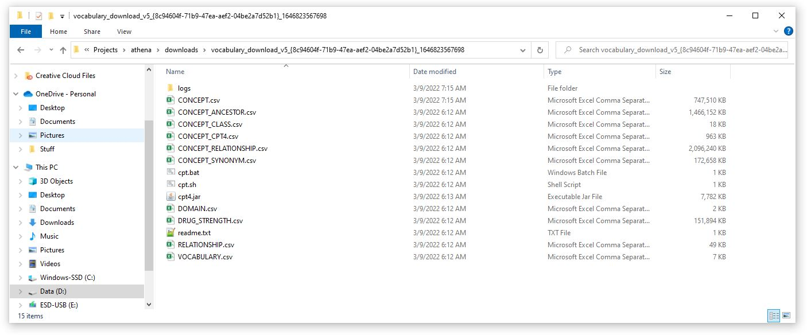
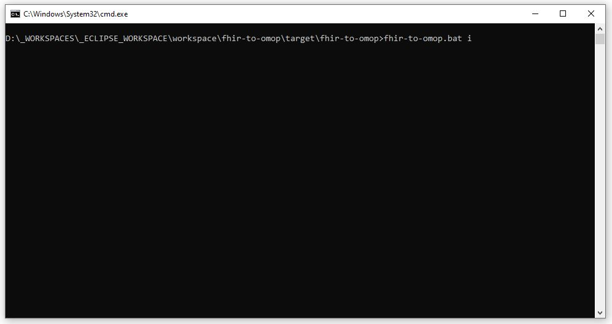
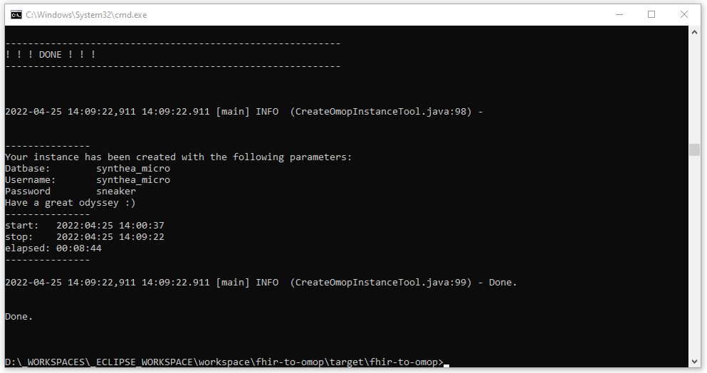
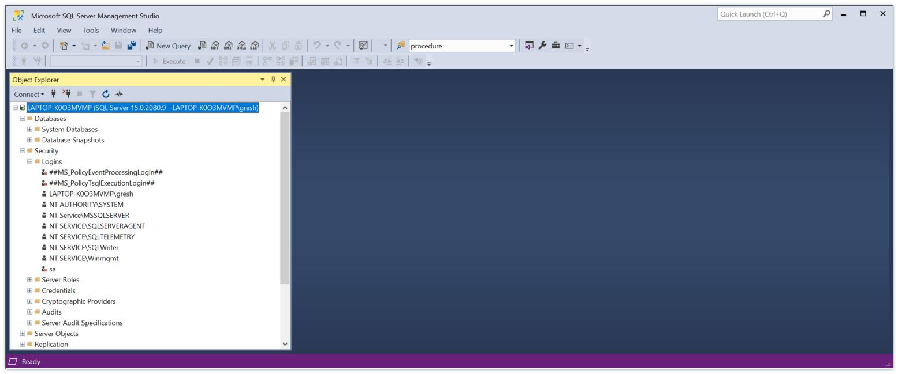
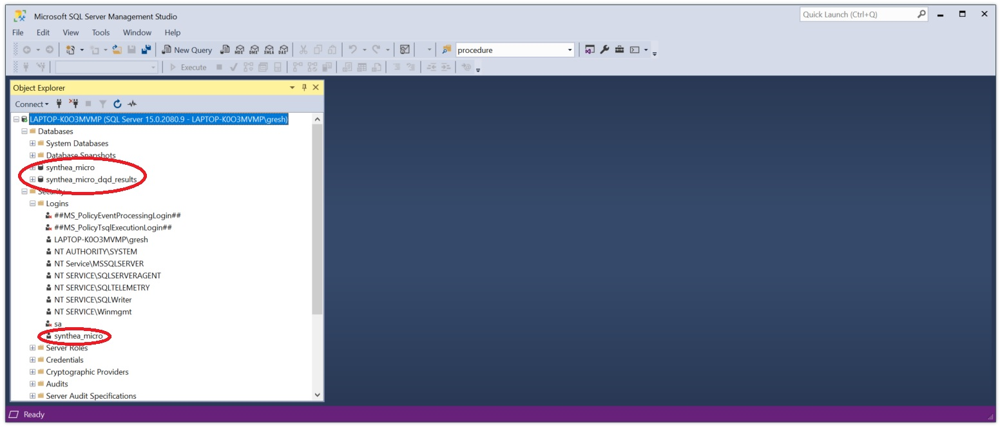

Build Your OMOP CDM Database

The CreateOmopInstanceTool class will build a complete OMOP CDM database that is ready to receive data and get plugged into OHDSI tools. This tool will
- Drop the OMOP Database to be created if it exists
- Create the OMOP database instance using the CDM 5.4 scripts
- Create the OMOP DQD results database instance
- Create an OMOP Database user
- Create tables used for mappings
- Create a cdm_source record (this is used by the Data Quality Dashboard)
- Create the sequences used to generate the primary keys when FHIR resources are imported
- Load all of the terminology tables (e.g. concept)
- Create indexes used during the data loading process
- A running instance of Microsoft Sql Server
- A folder containing the files that define the vocabularies to be used for the instance downloaded from Athena
- Correct settings in the app.properties file. The app.properties file provided with the distribution has everything required for a default build (but will need to be modified to use your information).
- Java: This application was developed and tested using Java 1.8.0
This tool can be run from the Standalone Application using the "instant-omop" or "i" option:
fhir-to-omop instant-omop
fhir-to-omop i
Prerequisites
Before running the Instant OMOP tool you will need the following (for details about versions, see the Start Here page.)- An app.properties file that correctly points to your database
- A running instance of Microsoft Sql Server you can connect to
- Terminology data files from Athena
- Java
The app.properties File
The following shows the settings in the app.properties file used for this example. A complete app.properties file can be downloaded from here.
# ---
# DATABASE INSTANCE
# ---
bootstrapUrl=jdbc:sqlserver://localhost;databaseName=master;integratedSecurity=true;encrypt=false
url=jdbc:sqlserver://localhost:1433;encrypt=false
syntheaDb=synthea_micro.dbo
uid=synthea_micro
pwd=sneaker
# ---
#
# VALUES USED TO CREATE CDM_SOURCE RECORD
# These values are used by the Data Quality Dashboard. Documented here:
#
# https://nachc-cad.github.io/fhir-to-omop/pages/navbar/ohdsi-tools/dqd/DataQualityDashboard.html
# https://ohdsi.github.io/DataQualityDashboard/
#
# ---
cdm_source_name=NACHC Test
cdm_source_abbreviation=NACHC-TEST
cdm_holder=johngresh@curlewconsulting.com
source_description=Test database
source_documentation_reference=https://github.com/NACHC-CAD/fhir-to-omop
cdm_etl_reference=N/A
source_release_date=2021-12-01
cdm_release_date=2021-12-01
cdm_version=5.4
vocabulary_version=v5.0 04-FEB-22
cdm_version_concept_id=756265
# ---
# TERMINOLOGY STUFF
# ---
# dir where you downloaded your terminology files
terminologyRootDir=D:\\NACHC\\Projects\\athena\\downloads\\vocabulary_download_v5_{8c94604f-71b9-47ea-aef2-04be2a7d52b1}_1646823567698\\
Terminology Files from Athena
In order to get your terminology files you will need an Athena login. If you do not have one, instructions for getting one are here. Instructions for creating and downloading terminology files from Athena are here.Note that the terminologyRootDir in the above app.properties segment is:
D:\\NACHC\\Projects\\athena\\downloads\\vocabulary_download_v5_{8c94604f-71b9-47ea-aef2-04be2a7d52b1}_1646823567698\\
Note the double backslashes to escape the "\" character.
Note that the string ends with "\\".
This is the directory where the files from Athena are located for this example.
This folder looks like this:

Running the Application
The Instant OMOP Tool can be run from the Standalone application as shown below by entering the command shown below. The second screen shot shows what the application should look like when it has finished. As shown in the second screen shot, the process takes about 10 minutes.
fhir-to-omop.bat i

Results
The results of running the application is the creation of all of the database object required for OMOP.
This includes the OMOP schema, the DQD results database, an OMOP database user, etc.
Before and after screen shots are shown below.

